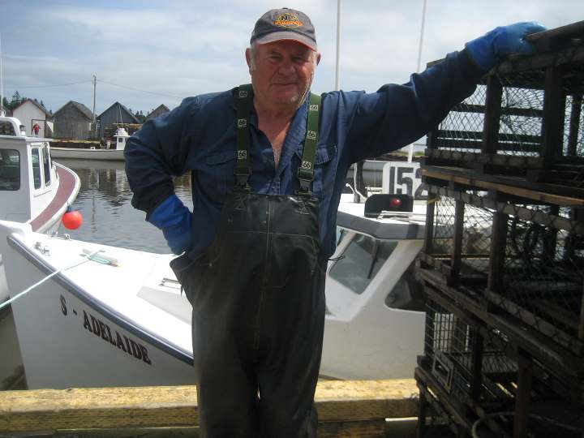

A little bit about us
Leslie Hardy & Sons Ltd., located in East Bideford P.E.I. is a major shellfish shipping company, provincially licensed and federally registered.
Owners and operators, Leslie Hardy and his sons take pride in the quality and delicious taste of the seafood that the fresh clean waters of P.E.I. have to offer. Once you have tasted it they are sure you will agree. Their motto is: For the Love of Oysters, and they love farming oysters! Their fully functional aquaculture operation was established in 1980. They culture their own oysters and also buy local product to ship. They offer fresh seafood in season, including Malpeque Oysters and Hard Shell Clams (quahaugs). Most products are harvested and shipped the same day.
Malpeque Oysters
According to CanadaCool.com,  the world famous Malpeque Oyster was judged the world's tastiest oyster at the Paris exhibition in 1900 and it hasn't lost its popularity since. It is grown on the beds of Malpeque and Bedeque Bays in Prince Edward Island,
located in the Canadian Maritimes. Characteristics of this famous oyster include a clean, "east coast" tough, outer shell, and full firm meat on the inside. A Malpeque oyster is easy to shuck due to its hard outer shell, the texture is smooth and
the taste is the perfect blend of sweetness and saltiness. PEI oysters typically have a distinct saltier taste than their other North American counterparts. Perfect for summer-time half shell grilling.
the world famous Malpeque Oyster was judged the world's tastiest oyster at the Paris exhibition in 1900 and it hasn't lost its popularity since. It is grown on the beds of Malpeque and Bedeque Bays in Prince Edward Island,
located in the Canadian Maritimes. Characteristics of this famous oyster include a clean, "east coast" tough, outer shell, and full firm meat on the inside. A Malpeque oyster is easy to shuck due to its hard outer shell, the texture is smooth and
the taste is the perfect blend of sweetness and saltiness. PEI oysters typically have a distinct saltier taste than their other North American counterparts. Perfect for summer-time half shell grilling.
HARD SHELL CLAMS (quahaugs)
Hard clams are quite common throughout New England, north into Canada, and all down the Eastern seaboard of the United States to Florida. The hard clam has many alternative names in addition to quahog. It is also known as the Northern Quahog, round clam or chowder clam. Furthermore, in fish markets there are specialist names for different sizes of hard clam, corresponding to their different sizes.
Hard Shell Clams have a tough, thick, predator resistant shell. The hard-shell clams from the Atlantic Coast remain the most popular.